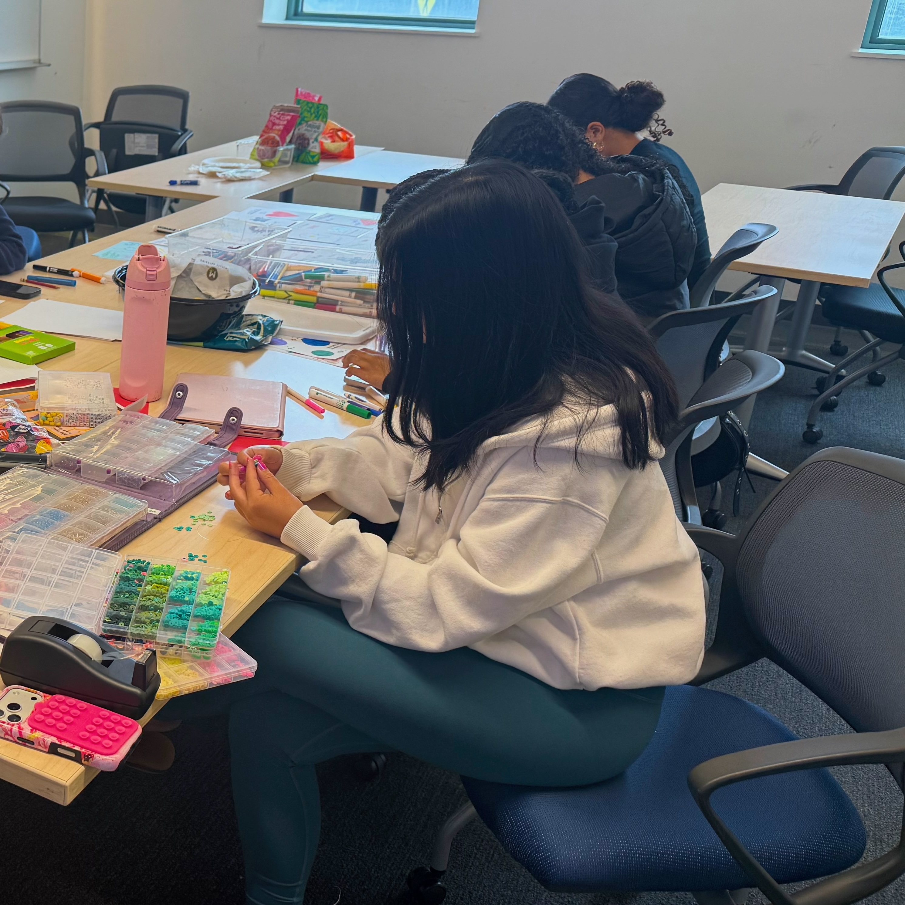
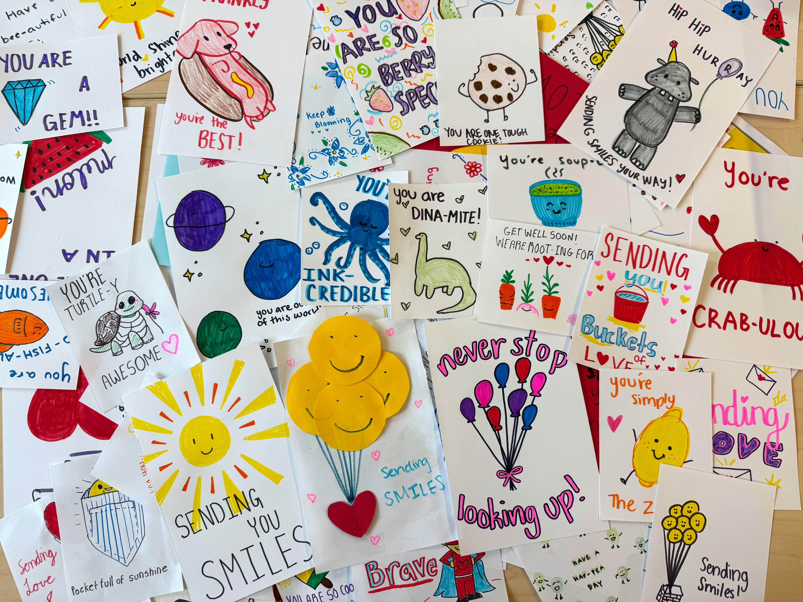
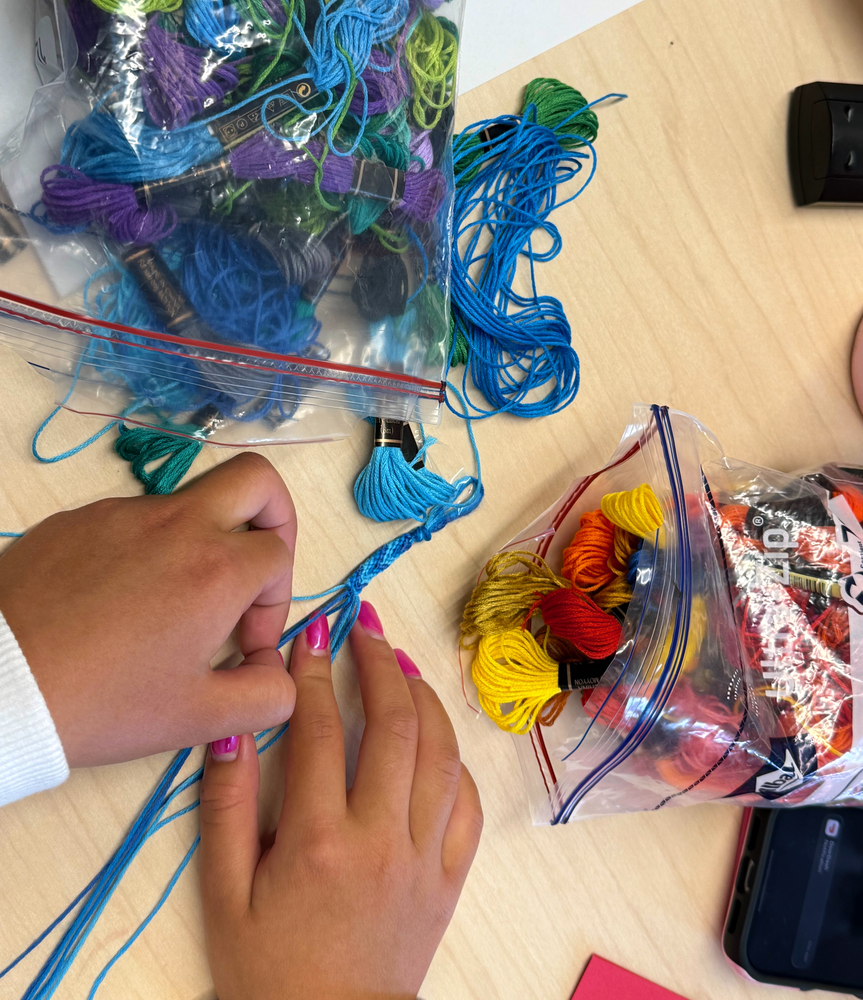
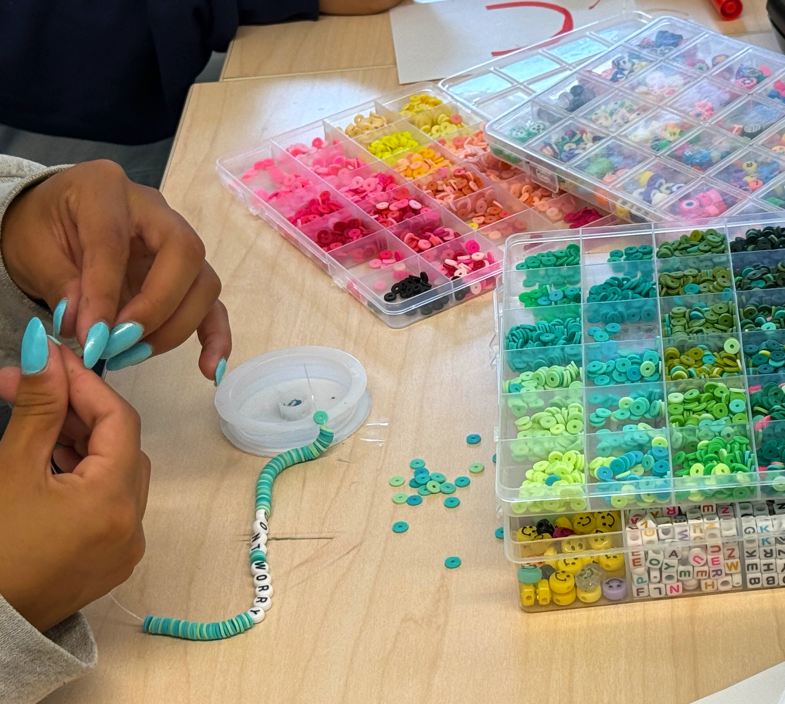
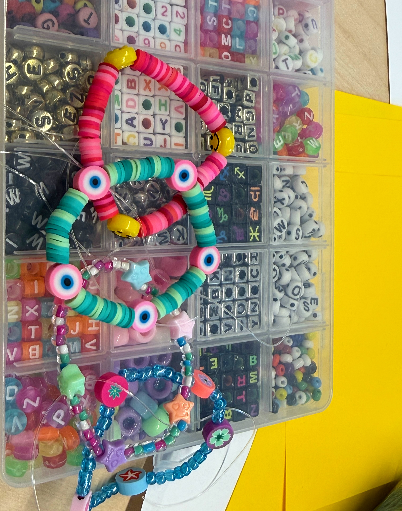

Bringing comfort, connection, and a little sunshine to neighbors who could use it.
Bags of Sunshine is a youth-led community service project sponsored by Lux et Cura Foundation. Young people and community volunteers collect donated goods and assemble thoughtful care packages for community members experiencing illness, hardship, isolation, or other circumstances where a practical gesture of care can make a difference.
Bags may be shared with children and families, older adults, patients receiving medical care, isolated community members, and others in need through partnerships with hospitals, senior communities, shelters, schools, community organizations, and other local programs.

Recent Bags of Sunshine work party.
A thoughtfully assembled package of useful, comforting, and enjoyable items created to remind someone in our community that they are seen and cared for.
Bags of Sunshine began with the simple idea of bringing encouragement to community members experiencing illness, financial hardship, social isolation, displacement, or other challenging circumstances.
There is no single Bag of Sunshine. Contents are adapted to the people and communities receiving them. A bag for a child may contain books, art supplies, toys, and activities. A bag for an isolated older adult might include personal-care products, a puzzle book, warm socks, snacks, and a handwritten card.
Every bag is assembled with useful items, thoughtful choices, and human connection in mind.
Contents vary according to recipient needs, community-partner requests, and donated inventory. Examples may include:
Items may vary by age group and setting. We work with community partners to ensure donations are appropriate, useful, and distributed with dignity.
Bags of Sunshine is intended for neighbors who could benefit from practical support, encouragement, or connection.
Children and families experiencing illness, hardship, displacement, or other circumstances where a small package of useful and engaging items can bring comfort.
Older adults, including people experiencing social isolation, living in senior communities, or receiving support through community and care programs.
Pediatric and adult patients, individuals experiencing housing or economic instability, and other underserved or isolated neighbors identified through trusted community organizations.
At our work parties, volunteers make the small things that become part of a larger act of care—from handmade cards and friendship bracelets to other items created for Bags of Sunshine recipients.




These are the people and the kinds of hands-on activities that make Bags of Sunshine possible.
Have useful products that could serve a purpose in the community? We welcome product donations from businesses, manufacturers, retailers, distributors, community organizations, and individuals.
We are especially interested in new, safe, usable products that might otherwise go unused or discarded.
Because Bags of Sunshine are adapted for different recipient populations, we are able to put a wide variety of donated products to good use.
We welcome donations ranging from individual items and cases to larger bulk donations.
Offer a Product DonationNot sure whether we can use something? Please ask. We would rather explore a potential donation than have useful products go to waste.
Individuals and groups can contribute requested items directly or purchase supplies through our current wishlists.
Wishlists change over time. Businesses and organizations considering bulk or in-kind donations should contact us directly.
Monetary donations help purchase needed products, supplement donated inventory, obtain packing materials, support transportation and delivery, and expand Bags of Sunshine to additional community partners.
Donate to Bags of SunshineLux et Cura Foundation is a tax-exempt 501(c)(3) nonprofit organization. Contributions are tax-deductible to the extent permitted by law. Lux et Cura can provide written acknowledgment of contributions.
Help assemble, organize, and support Bags of Sunshine.
Bags of Sunshine can provide a structured community service project for students and youth organizations.
Adult mentors provide guidance and supervision while young people take meaningful roles in planning, organizing, and carrying out the project.
Contact: luxetcurafoundation@gmail.com
Whether you have a financial gift, a box of supplies, product donations, student service hours, or a community connection, there may be a way to turn it into care for a neighbor.